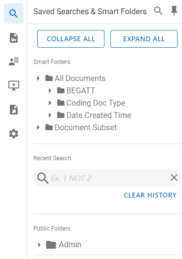
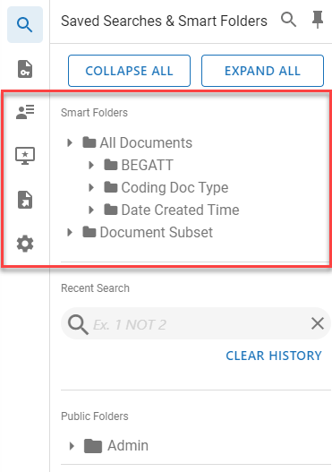
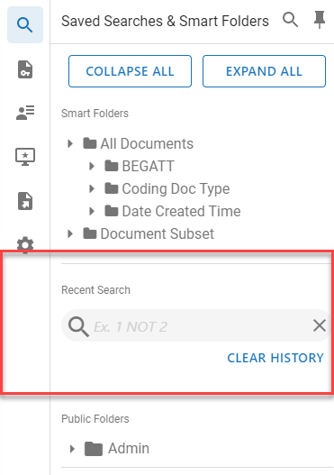

Note: A horizontal scroll bar in the Saved Search area now displays when the search name is too long to view the entire name at once.
The Saved Searches & Smart Folders panel contains the folder hierarchy showing where you have stored your searches. The hierarchy comprises folders that are labeled Private, Public, and Shared.
For the definition of these folders and how to create, edit, and delete them, see

In addition, the panel lists Smart Folders. For a definition of how Smart Folders work, see

Recent Searches are also displayed in the panel. When a Visual Search (see

|
|
Note: A horizontal scroll bar in the Saved Search area now displays when the search name is too long to view the entire name at once. |
Related Topics